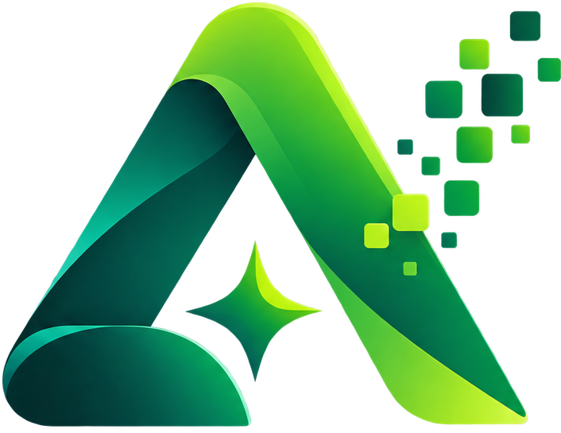

Dalam satu tahun, JKN mencatat
0
admisi rawat inap tingkat lanjut
2.511 fasilitas rujukan
Rp 4,75 jt per admisi
Sumber: Statistik BPJS Kesehatan 2018
Ribuan peringatan.
Tanpa alasan.
Verifikator tetap membuka berkas satu per satu, karena skor tidak menjelaskan apa pun.

Arsa AI
JKN Risk Intelligence
Menemukan klaim berisiko, dan menunjukkan buktinya.
Dari berkas klaim sampai keputusan
8 detektor, satu skor yang bisa dijelaskan
Skor komposit, lengkap dengan bukti tiap detektor
01 · Command Center
Di mana risiko menumpuk
Eksposur, tren, dan peta panas provinsi dalam satu layar.
Rp 350,8 Jt eksposur terdeteksi
arsa-jkn · Command Center
02 · Antrean prioritas
Mulai dari yang paling penting
Verifikator tidak membuka semua berkas. Ia mulai dari kasus dengan skor tertinggi.
1.503
klaim dianalisis
arsa-jkn · Pemeriksaan Klaim
03 · Bukti, bukan sekadar skor
Skor 99. Ini alasannya.
Tagihan 3,5 kali rerata nasional BPJS, jauh di atas median klaim sejenis.
04 · Graf relasi
Siapa terhubung dengan siapa
Faskes, dokter, klaim, pasien, dan diagnosis dalam satu jaringan.
arsa-jkn · Peta Risiko & Graf
05 · Pola risiko
Pola yang bergeser, terlihat lebih awal
Radar 8 jenis temuan dan tren 28 hari, diuji secara statistik.
arsa-jkn · Pola yang naik
06 · Copilot bersitasi
Bertanya, lalu melihat buktinya
Setiap kalimat mengutip sumber. Peta perbandingan tampil di dalam jawaban.
[1] Peta risiko DKI
[2] Peta risiko Jatim
07 · Unggah dan privasi
Identitas disamarkan sebelum disimpan
CSV, Excel, atau JSON. Kolom dipetakan otomatis, dikonfirmasi manusia.
Contoh baris berkas rumah sakit
NIK
Nama pasien
Alamat
08 · Audit dan kejujuran
Setiap keputusan tercatat
Rantai SHA-256 yang hanya bisa ditambah. Angka kinerja dilabeli batasannya.
Diukur pada data sintetis berlabel; belum divalidasi pada klaim riil.
Arsa AI
Menemukan klaim berisiko, dan menunjukkan buktinya.
arsa-jkn-627843549213.asia-southeast2.run.app
Healthkathon 2026 · Detect Smarter, Protect JKN · Data sintetis berlabel dan statistik resmi BPJS, tanpa data peserta riil
Arsa AI